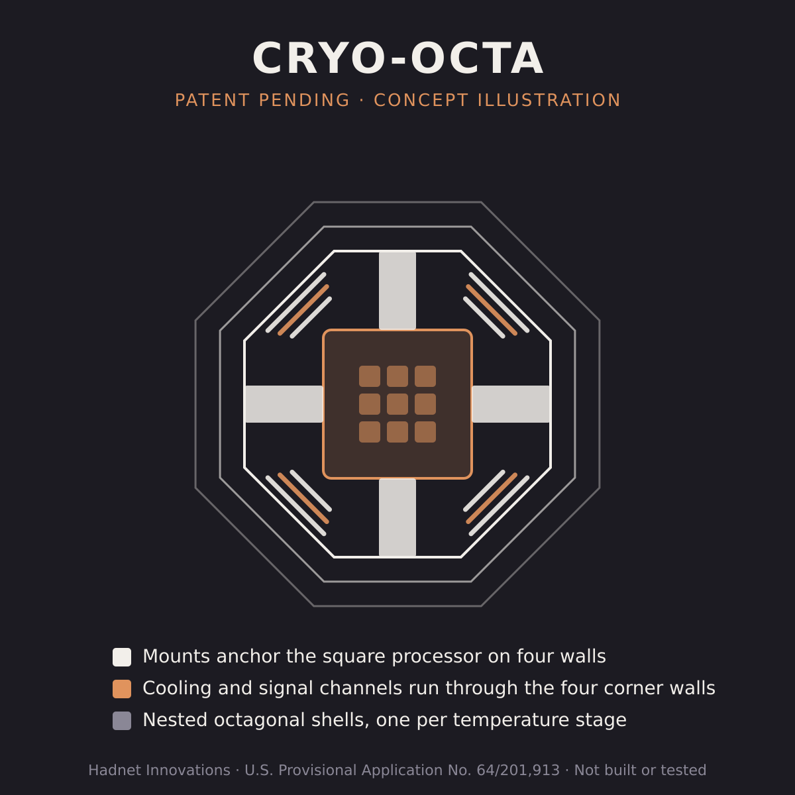

Patent Pending
CRYO-OCTA
A modular, octagon-shaped cryostat concept that holds a square quantum processor steady and moves cooling and wiring through its corner walls.
The problem
Quantum processors must be kept extremely cold and steady. As processors grow, the wiring and readout lines running into the cold zone add heat and crowding, and today's enclosures are hard to expand, service or shrink.
The approach
- Nested octagonal shells, one per temperature stage.
- Modular wall panels that can be swapped, serviced or scaled.
- Square processor anchoring on four of the eight walls for even, stable support.
- Corner-wall channels carrying cooling and signal lines through the other four walls.
- Tiling: octagons and squares fit together, so units could link into larger systems.

Status
- Stage
- Concept. Not yet built or tested.
- Patent
- U.S. Provisional Application No. 64/201,913, filed November 18, 2026
- Public summary
- Zenodo: 10.5281/zenodo.24366988
We welcome conversations about licensing, research partnerships and pilot opportunities.
Discuss CRYO-OCTA